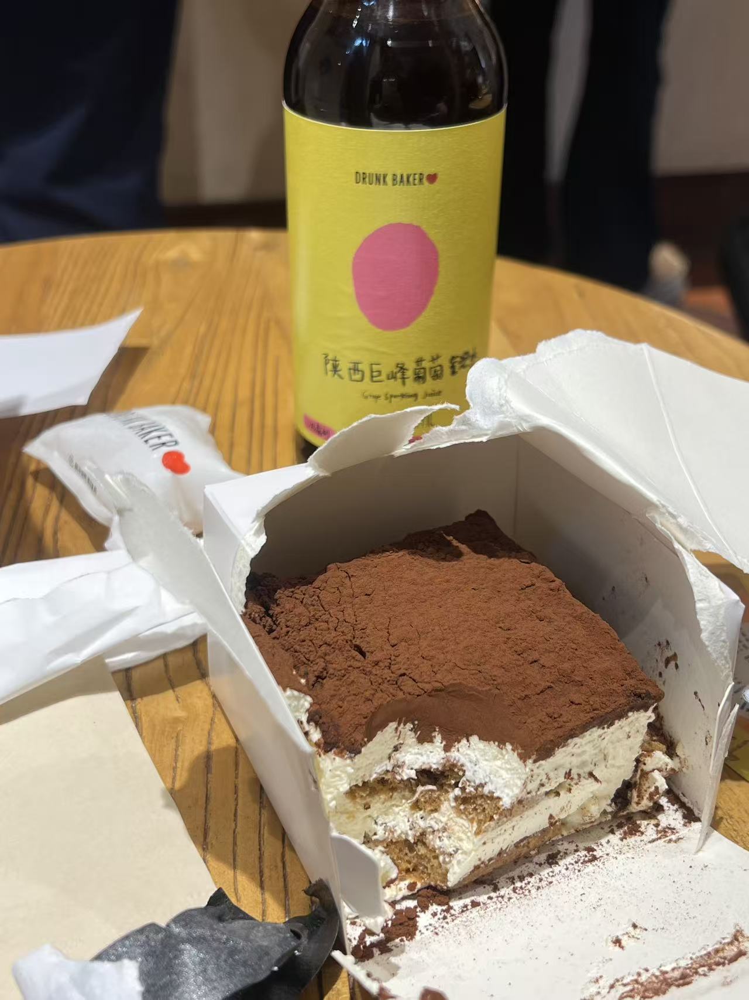
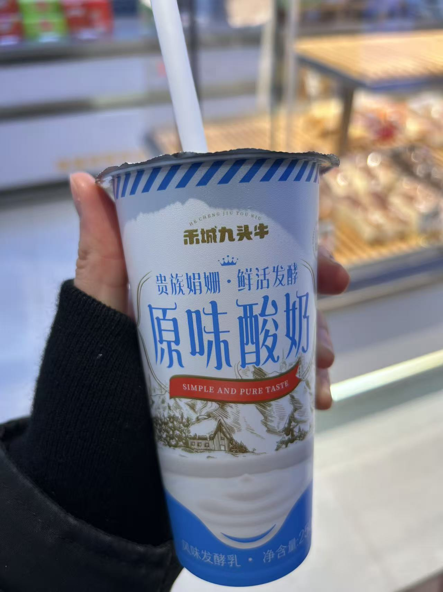
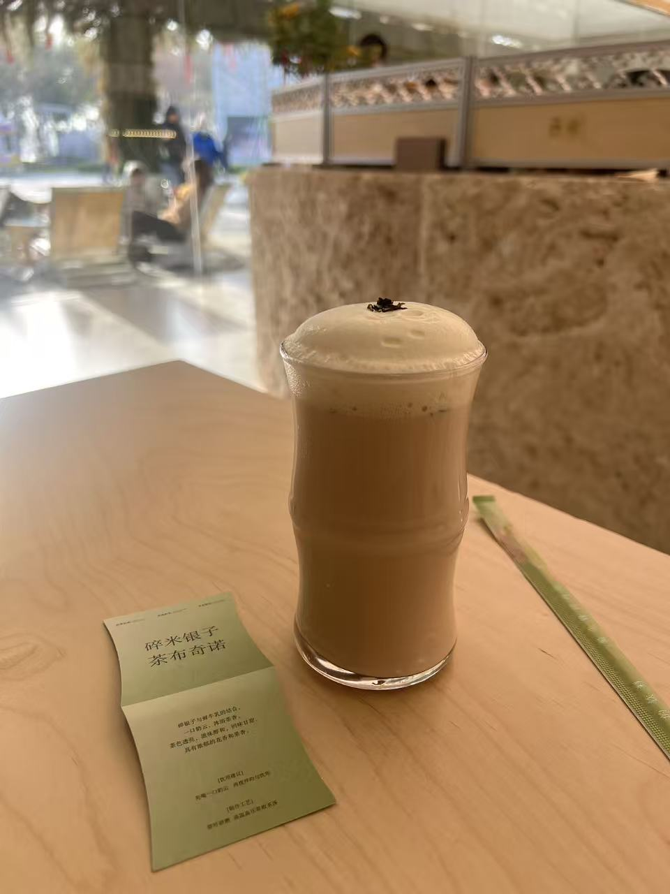
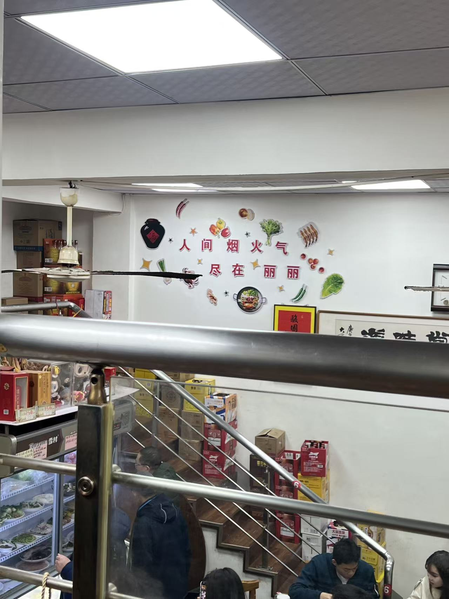
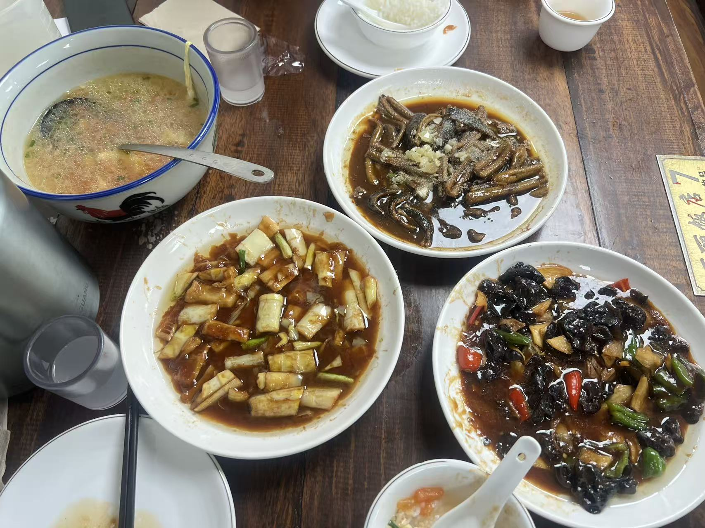
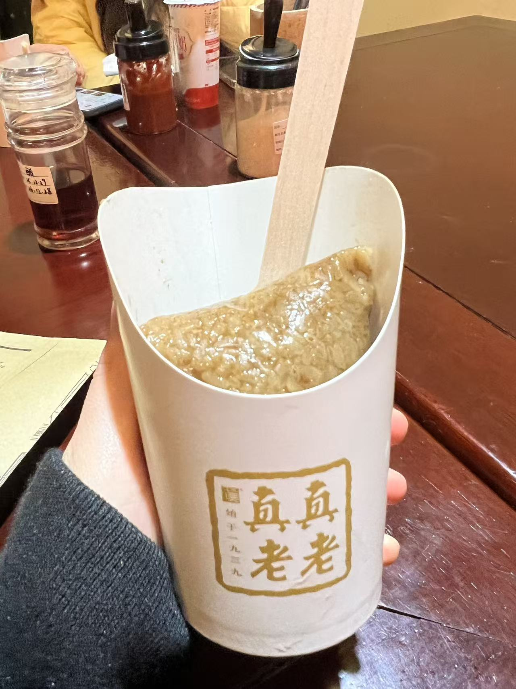
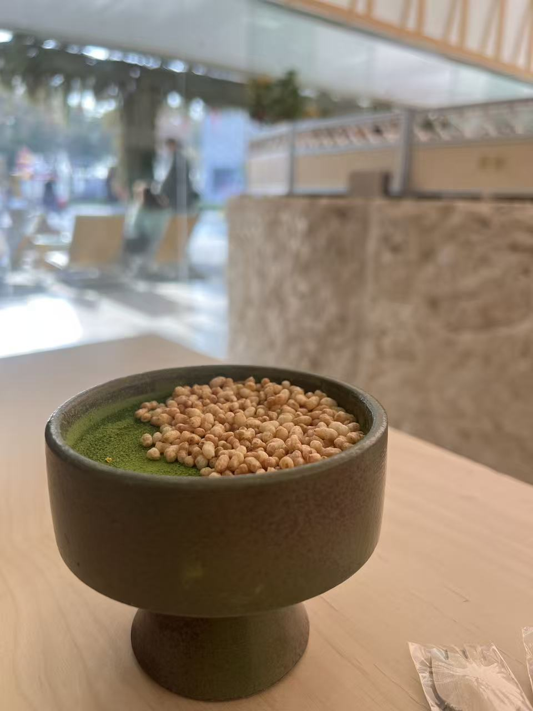
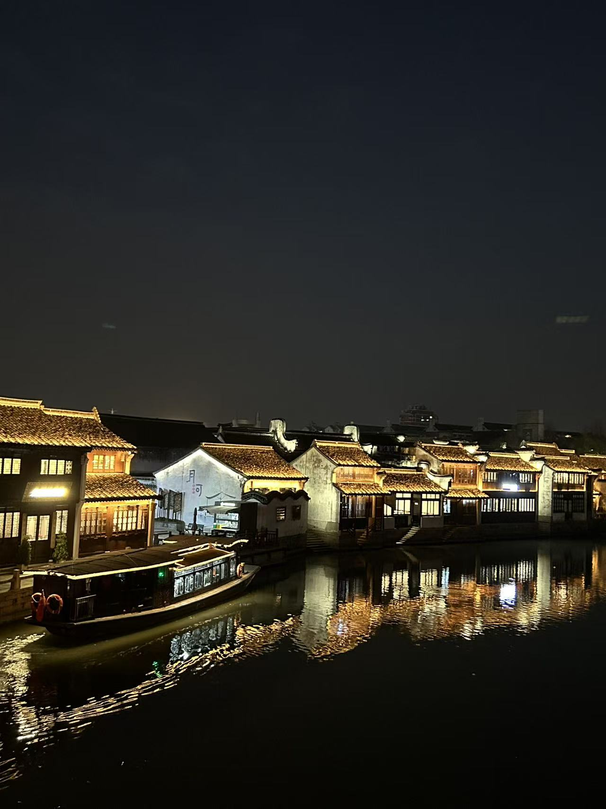
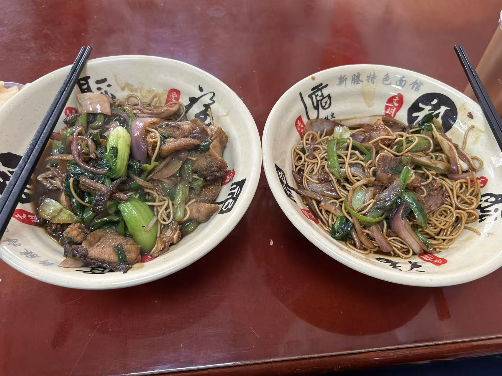

嘉兴
2026.01.10初到嘉兴

DD：醉师傅的提拉米苏，不如开普莱舍！
HH:选了个最小的蛋糕，但其实不是最想吃的。DD在街上边逛边喝气泡水的样子像个酒鬼哈哈

DD：禾城九头牛的酸奶，小珩挺爱喝！
HH：吃粽子的时候看到了对面在喝的当地品牌的奶。DD坚持带我去买到想喝的！！

DD：碎银几两，糯糯银子茶布奇诺，等了半小时，不大好喝！
HH：期待很大但却很失望的饮品。还不如外卖点的诺丁山！

DD：丽丽餐厅，生意很火爆！
HH：很有当地烟火气的小馆子，菜的味道都还不错，DD很会找地方！

DD：口味还行，但是我觉得不如广东菜

DD：嘉兴大粽子，没什么特别！
HH：粽子是好吃的，烧卖难吃到我俩忍不住骂街（隔壁桌应该听到我们大声蛐蛐了）。

DD：小珩爱吃的漂亮甜点
HH：小珩其实觉得很一般，只是忍不住想尝新奇的甜点。
DD：嘉兴落日
HH：还想要收集很多在一起时看的日落。月河街从白天逛到了天黑。
DD：月河街道

DD：嘉兴的船宴！
2026.01.11 Day 2

DD：临走前吃了当地特色干挑面！紧赶慢赶，差点没赶上飞机
HH：这个面条有股焦香的味道。还好顺利赶上了飞机，喝上了DD推荐的厦门航空的椰汁。